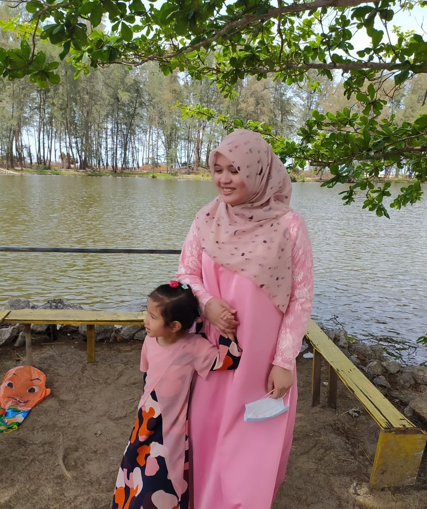
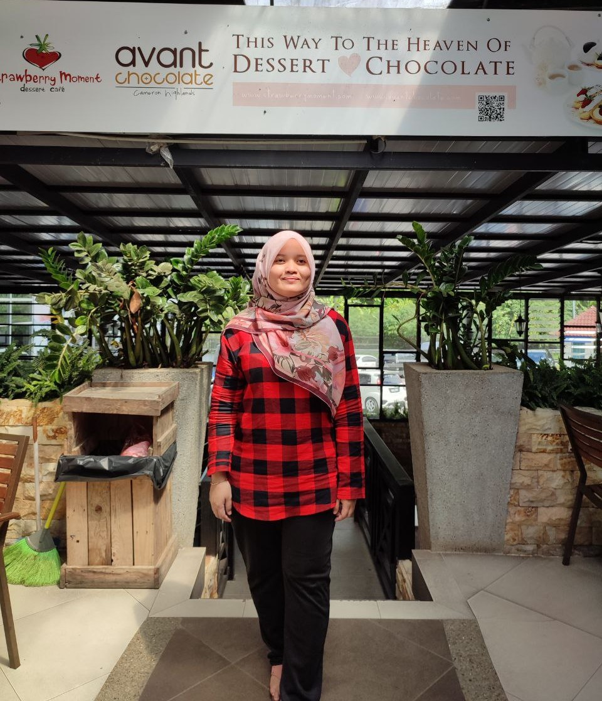
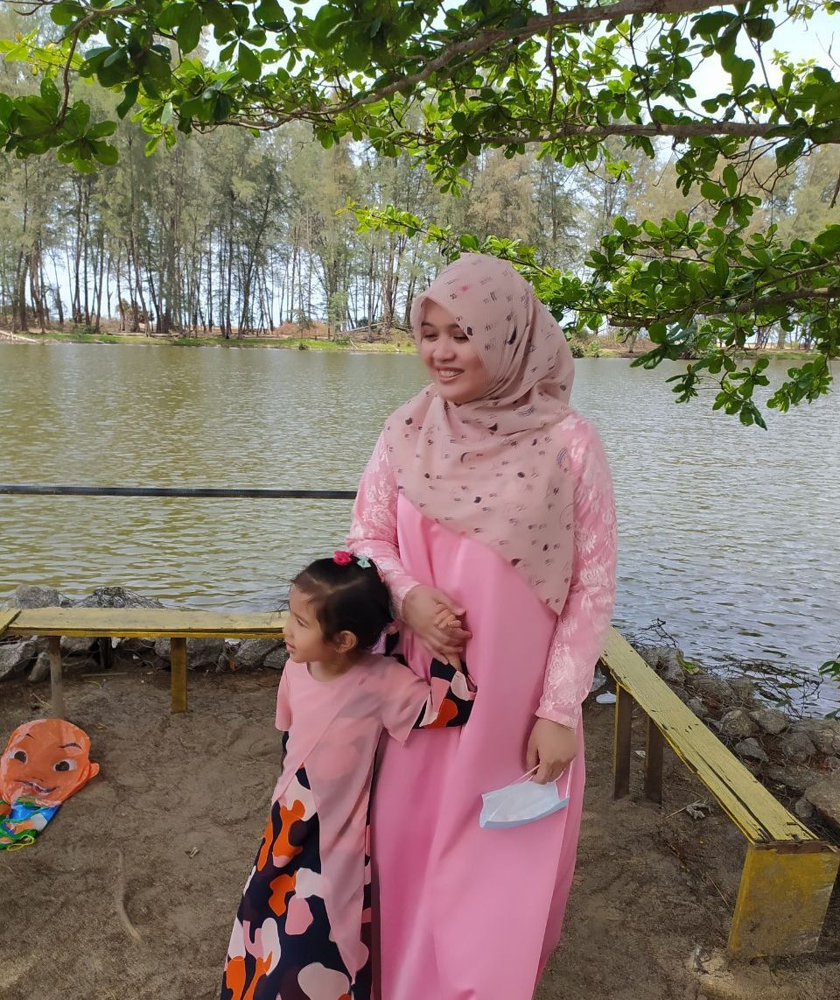
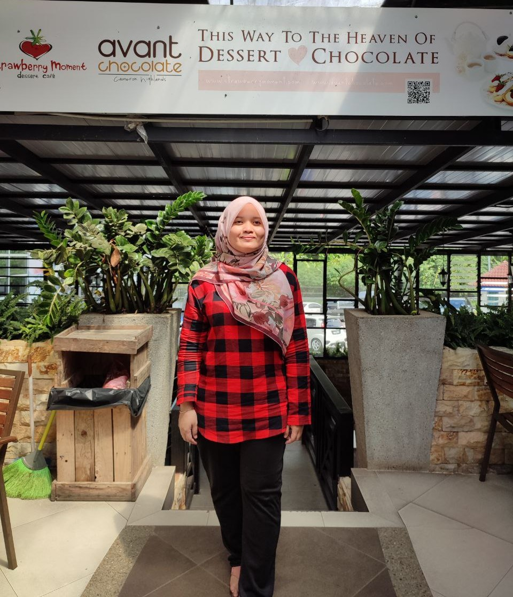
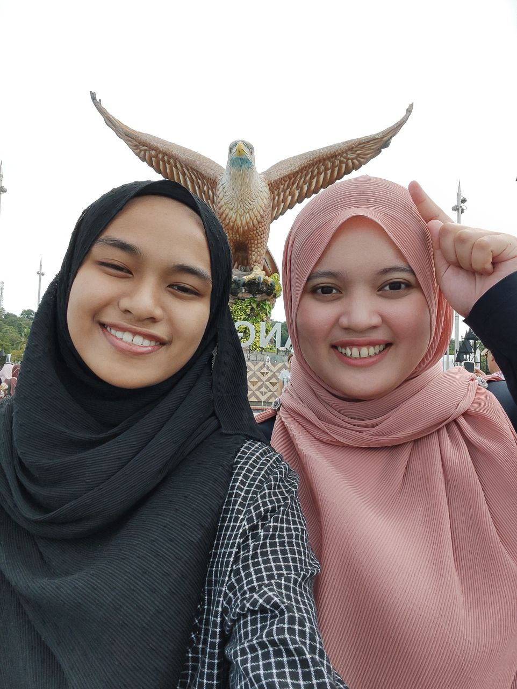
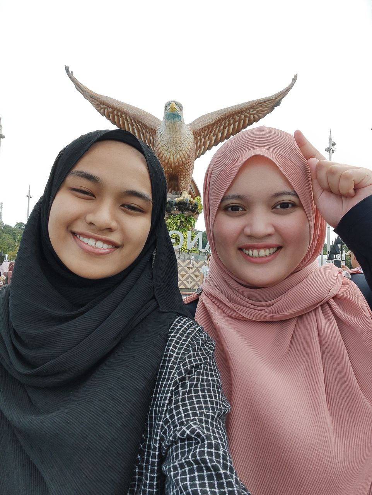

ABOUT ME
 



| CATEGORY | MY BIODATA |
|---|---|
| NAME | SITI NURNABIHAH BINTI MOHD SARIFF |
| MATRIC NO | 2021836498 |
| CLASS | D2 BA242 4B |
| TARIKH LAHIR | 10 FEBRUARI |
| TEMPAT TINGGAL | WAKAF BHARU, KELANTAN |
| AGAMA | ISLAM |
| BANGSA | MELAYU |
MY INTEREST


 

I love traveling and going on sightseeing holidays with my family. Exploring places like Cameron Highland, Langkawi, and Terengganu has opened my eyes to the beauty of different countries. Alongside my passion for travel, I aspire to become a financial analyst. This field intrigues me as it involves analyzing financial data, assessing investments, and providing valuable insights for decision-making. I want to leverage my analytical skills and knowledge of the financial industry to make a significant impact.